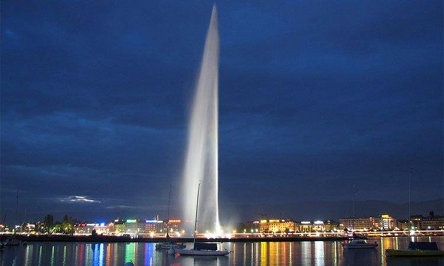

Todo lo que debes saber sobre la vida en el reino
¡Si eres expatriado en Saudi quizás quieras darte una vuelta por la página!
01
¿Qué hacer en Saudi?

La Fuente del Rey Fahd
Sumérgete en la majestuosidad de la Fuente del Rey Fahd en Jeddah, un espectáculo visual que te dejará sin aliento. Esta maravilla arquitectónica no es una simple fuente, es la fuente más alta del mundo, disparando agua a increíbles alturas de hasta 260 metros, casi alcanzando la altura de la Torre Eiffel. Imagina la mezcla perfecta de la elegante danza del agua, combinada con el brillante resplandor de más de 500 luces halógenas iluminando la noche. Desde cualquier lugar de Jeddah, esta joya es visible, pintando un retrato etéreo contra el telón de fondo del oscuro cielo nocturno. Pero, eso no es todo. A su alrededor, la vibrante vida de la ciudad de Jeddah continúa, con su cultura única y su exquisita gastronomía. La Fuente del Rey Fahd es un punto de referencia ineludible, una experiencia que debes ver por ti mismo.
La Torre del Kingdom Center
El Kingdom Centre, la joya arquitectónica de Riyadh, es más que un rascacielos; es un emblema de modernidad y lujo en la capital de Arabia Saudita. Este impresionante edificio, que se alza orgullosamente con su aguja de 300 metros de altura, domina el horizonte de la ciudad, y es un testimonio de la audaz visión futurista del país. Dentro, descubrirás un mundo de opulencia con tiendas de diseñadores, restaurantes gourmet y un impresionante mirador que ofrece vistas panorámicas de la ciudad. Imagina contemplar la puesta de sol sobre las dunas del desierto desde el Sky Bridge, mientras la ciudad comienza a iluminarse bajo tus pies. O sumérgete en la cultura local explorando el fascinante museo de arte islámico.


Mecca
La Meca, en el corazón de Arabia Saudita, es mucho más que el epicentro espiritual del Islam. Es una ciudad que late con fervor y devoción, atrayendo a millones de peregrinos cada año, ansiosos por experimentar su esencia sagrada. El majestuoso complejo de la Gran Mezquita, con la Kaaba en su núcleo, se alza como un testimonio impresionante de fe y humanidad. Pero más allá de su significado religioso, La Meca es un caleidoscopio de culturas y tradiciones, un crisol donde se fusionan influencias de todo el mundo islámico. Imagina perderse en sus bulliciosos mercados, degustando delicias culinarias o explorando su rica historia en los museos locales. La Meca es una experiencia transformadora que te deja con un sentido profundo de conexión y entendimiento.
Al'Ula
Al'Ula, un enigmático oasis en el corazón de Arabia Saudita, es un destino que conmueve el alma y asombra los sentidos. Anidado entre cautivantes acantilados de color carmesí, se erige como testimonio de las antiguas civilizaciones que florecieron aquí. Conocida por sus formaciones rocosas, antiguas tumbas y maravillas arqueológicas como Al-Khuraybah, una ciudad nabatea intacta durante siglos, Al'Ula ofrece un viaje en el tiempo. Imagina caminar a través de antiguas ruinas bajo un cielo estrellado o atravesar los paisajes desérticos en un 4x4, mientras la radiante puesta de sol pinta las rocas en tonos de oro y naranja. Con su fusión única de historia, cultura y belleza natural, Al'Ula es una experiencia inolvidable que espera ser descubierta.
Jeddah
Jeddah, la puerta de entrada a la sagrada ciudad de La Meca, se erige como un faro de multiculturalidad en Arabia Saudita. Esta vibrante urbe portuaria, bañada por el Mar Rojo, es un caldero de historias y tradiciones. Aquí, los antiguos souqs y las casas de coral se entrelazan con lujosos rascacielos y centros comerciales de vanguardia, ofreciendo un contraste sorprendente que fascina a todo viajero. Jeddah no solo cautiva por su mezcla única de modernidad y antigüedad, sino que también destaca por su prominente arte callejero y su exquisita gastronomía marina. Desde pasear por el histórico Barrio de Al-Balad hasta bucear en los arrecifes de coral, Jeddah promete ser un destino inolvidable que satisface tanto el ansia de aventura como el deseo de profundizar en la rica cultura saudí.
02
¿Cómo es el proceso para establecerse?
1. El Iqama.
El "Iqama" es una tarjeta de residencia que se otorga a los expatriados que trabajan en Arabia Saudita. Este documento es esencial para vivir y trabajar en el Reino de manera legal. A continuación, te explico cómo se obtiene y cuáles son sus usos principales en el Reino:
Obtención del Iqama:
- Oferta de trabajo: Antes de solicitar el Iqama, el interesado debe tener una oferta de trabajo de un empleador saudita.
- Visado de trabajo: El empleador saudita patrocinará al expatriado para obtener un visado de trabajo, que le permitirá ingresar al país.
- Pruebas médicas: Una vez en Arabia Saudita, el expatriado debe someterse a pruebas médicas en un centro aprobado. Estas pruebas garantizan que el individuo no tiene enfermedades contagiosas.
- Documentación: El empleador o patrocinador presentará la documentación necesaria, incluidos el contrato de trabajo, los resultados médicos, el pasaporte y una fotografía, entre otros.
- Pago de tarifas: Antes de emitir el Iqama, se deben pagar ciertas tarifas. Por lo general, el empleador cubre estos costos, pero en algunos casos, puede recaer sobre el empleado.
- Emisión del Iqama: Una vez aprobada la solicitud y pagadas las tarifas, se emite el Iqama. El proceso puede durar desde unos días hasta varias semanas.
Usos del Iqama en el Reino:
- Identificación: El Iqama sirve como tarjeta de identidad para los expatriados en Arabia Saudita.
- Viajes internos: Para viajar dentro del país, especialmente en los puntos de control, se requiere presentar el Iqama.
- Banca: Para abrir una cuenta bancaria en el país, el Iqama es esencial.
- Obtención de licencia de conducir: Si deseas conducir en Arabia Saudita, necesitarás el Iqama para obtener una licencia de conducir local.
- Registro de teléfono móvil: Al comprar una tarjeta SIM, se requiere el número de Iqama para el registro.
- Alquilar o comprar propiedad: Para alquilar o comprar una propiedad, el Iqama es necesario como prueba de identidad y estatus legal.
- Acceso a servicios gubernamentales: Muchos servicios gubernamentales, como hospitales o registros oficiales, requieren la presentación del Iqama.
- En resumen, el Iqama es un documento esencial para los expatriados en Arabia Saudita. Es tanto un testimonio de su estatus legal en el país como una herramienta necesaria para acceder a muchos servicios y derechos básicos.
2. La App Absher.
Para un expatriado en Arabia Saudita, Absher simplifica muchas tareas administrativas, lo que la hace una herramienta indispensable. Se recomienda familiarizarse con la aplicación poco después de llegar al Reino.
Múltiples Usos de Absher:
- Plataforma Oficial de Servicios Electrónicos: Absher es la aplicación oficial de servicios electrónicos proporcionada por el Ministerio del Interior de Arabia Saudita.
- Estado de Visa y Residencia: Los expatriados pueden consultar el estado de su visa de residencia (Iqama), su fecha de vencimiento, y renovarla a través de Absher.
- Visas de Salida y Reingreso: Si un expatriado desea salir temporalmente de Arabia Saudita, necesita una visa de salida y reingreso. Esta puede ser solicitada y consultada a través de Absher.
- Servicios para Dependientes: Los expatriados pueden usar Absher para agregar o renovar visas para sus dependientes.
- Servicios de Licencia de Conducir: Consulta el estado, renueva o obtén una nueva licencia de conducir a través de la aplicación.
- Servicios de Vehículos: Renueva el registro del vehículo, consulta cualquier infracción de tráfico y paga multas.
- Registros de Viaje: Consulta un registro de todas tus entradas y salidas del país.
- Permiso de Hajj: Si planeas realizar el Hajj, puedes solicitar un permiso a través de Absher.
- Consulta Pública de Fondos Disponibles: Verifica cualquier fondo disponible o reembolsos gubernamentales que se te deban.
- Notificaciones: Recibe notificaciones importantes, incluyendo cuando tu Iqama esté por vencer o si recibes una multa de tráfico.
- Transacciones Electrónicas Gubernamentales: Monitorea y consulta sobre el estado de diversas transacciones electrónicas gubernamentales.
- Comunicación: Actualiza tu número de móvil o cambia el número registrado asociado con la cuenta.
- Seguridad: Absher ofrece seguridad adicional enviando OTPs a números móviles registrados para transacciones.
- Integración con Otras Aplicaciones: La plataforma Absher está integrada con otras aplicaciones gubernamentales, facilitando el proceso de varias solicitudes.
- Interfaz Amigable: La aplicación ofrece servicios en árabe e inglés, atendiendo a una amplia base de usuarios.